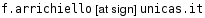

Persone
(In ordine alfabetico Listing)- Antonelli Gianluca [Homepage]
Dipartimento di Automazione, Elettromagnetismo,
Ingegneria dell'Informazione e Matematica Industriale,
Universita degli Studi di Cassino, Italy

- Arrichiello Filippo [Homepage]
Laboratory of Industrial Automation-Robotics Research group,
Dipartimento di Automazione, Elettromagnetismo,
Universita degli Studi di Cassino, Italy
 AT unicas DOT it" align="top" />
- Bhushan Chitresh [Homepage]
Department of Electronics & Electrical Communication Engineering
Indian Institute of Technology Kharagpur, India

- Prakash Chander
Department of Computer Science Engineering
Indian Institute of Technology Guwahati, India
- Purkayasth Sayandeep [Homepage]
Department of Electronics & Electrical Communication Engineering
Indian Institute of Technology Kharagpur, India

Groups
 Kharagpur Robotics & Artificial Intelligence Group Indian Institute of Technology Kharagpur India |
Laboratorio di Automazione Industriale Universita degli Studi Cassino Italy |